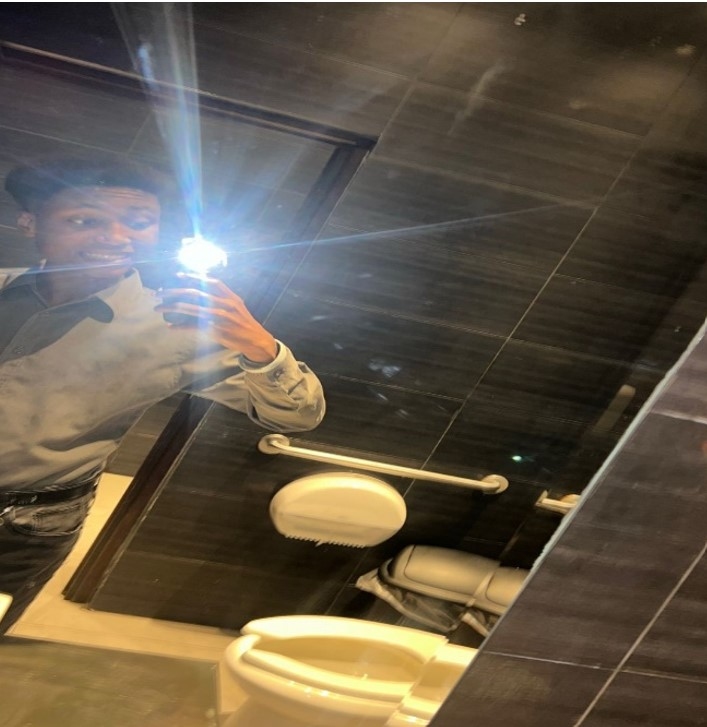

Me llamo Diego Veloz, tengo 16 años, nací el 31 de marzo de 2008. Nací en Buenos Aires, Argentina. Mis papás trabajaban en Argentina y pasaron el trabajo a Panamá, y nos mudamos. Ya llevo 11 años acá,
y me siento feliz de haber conocido muchas amistades valiosas a lo largo de mi vida. Vivo con mis padres, mi hermana menor y tengo una mascota llamada Kira; es un husky que tiene 9 meses, jode mucho, pero nos encariñamos con ella y es parte de mi familia.
Me gusta salir mucho, como al parque, a la piscina o al cine. Estudio en el Instituto Fermín Naudeau, en 11° del bachillerato en tecnología. Pienso que después de graduarme viajaré a España a estudiar en la universidad la carrera de Ingeniería en Sistemas, o quién sabe, y ser futbolista profesional. Escucho cualquier tipo de música, soy un poco tímido y me gusta mucho jugar videojuegos y practicar deportes, sobre todo el fútbol, en el que soy un jugador 10/10, obviamente.
. Me considero una persona cariñosa, inteligente (cuando quiero) y tímido, aunque últimamente me suelto más. Espero seguir aprendiendo mucho más de la vida, completar mis metas y que mi familia, amigos y conocidos estén orgullosos de mí.